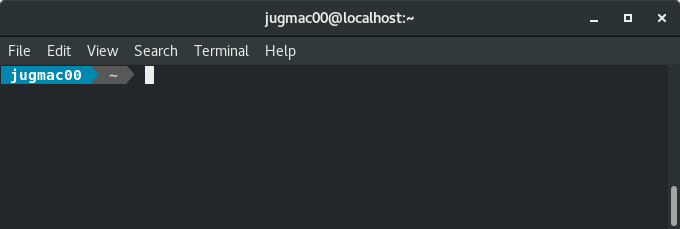
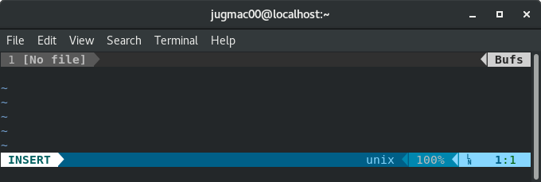

This blog post is work in progess... much more to come - but the train is only 10 minutes late (uncommon in Germany :-) ) , so I am not able finish the blog post now.
The main effort of everybody at the sprint was to wrap up all loose ends, finalize what one started, and of course get Zope 4 final released!
As there was no final standup, I try to list what I picked up...
Again, Jens Vagelpohl, Marius and Dieter and maybe some more guys I possibly missed, supported the sprint massively from remote!
There are some more news about merging the Zope into the Plone foundation.
Very brief recap, as I want to spend the remaining time with some more documentation updates.
Again, Jens Vagelpohl, Dieter, Marius and Jason very actively contributed from remote.
P.S.: I will update this blog post when I sit in the train back home... let's get Zope 4 ready to be released!
2019-05-10
Also, Jens Vagelpohl and Dieter Maurer contributed a lot by adding valuable insights to some complicated discussions, reviewed a lot of pull requests... Jens also added documentation about how to setup daemoize Zope 4 on a systemd powered Linux box and fixed on old bug with importing ZEXP files.
Matthew Wilkes announced some updates on the upcoming merger of the Zope into the Plone foundation, and thus the improvements on the onboarding for new developers concerning the committer agreement.
We have plenty of fun here. The venue ( https://twitter.com/koffij_halle ) is great - the food is excellent! Basti, the new cook, really rocks the kitchen!
NOTE: This blog post is WORK IN PROGRESS and will be updated regularly. Though, this post is first and foremost written for myself, please do not hesitate to drop me a line at juergen dot gmach at googlemail com or directly contribute to this article via GitHub.com.
This blog post tries to ease beginning and keeping up with development of the open source web application server Zope and its universe.
Zope and probably the most of its related packages are licensed under the ZPL. In order to contribute to the project, you need to sign a contributor's agreement. If you do not get a reply to your application in a reasonable amount of time, please resend your email.
Once your application has been accepted, which is a mere formality, you may to start contributing.
Zope and all its related packages, which reside under the umbrella of the Zope Foundation, are hosted at GitHub.
For instance, the repository for Zope is located at https://github.com/zopefoundation/Zope
NOTE: There are plans to merge the Zope Foundation into the Plone Foundation - current status is unknown.
Though not 100% consistent, usually you cannot and you should not directly work on the master branch.
The recommended way is to clone the repository and work on a new branch.
Once finished, push your branch to the repository and create a pull request. Both your branch and the pull request will get automatically tested by TravisCI (see below).
Most repositories need both green tests and a successful review before a pull request gets merged.
Usually you will merge the branch yourself - in order to show off that you have signed the contributor agreement.
After the pull request had been merged, please delete your branch.
NOTE: If you want to implement very small changes - e.g. fixing typos - you can directly edit the file in your browser by clicking the pencil icon when viewing the file on GitHub.com.
It is highly recommended that all code changes, bug fixes and new features should be tested by automatic tests.
Unlike most other Python projects, Zope/universe does not make use of pytest - which can be both quite surprising and a bit of a hurdle.
Zope/universe makes heavily use of zope.testrunner.
Currently, Python 2.7, 3.5, 3.6, 3.7 and 3.8 (dev) are supported for most of the Zope 4/universe packages. This reflects the officially supported Python versions.
Some packages also support PyPy.
Afaik, there are plans to drop support for Python 2.7 with Zope 5.
When adding support for a new Python version, or dropping support for an old one, you have to update several files:
Whenever you push to a branch or make a pull request, TravisCI automatically pulls your changes and runs the project's test suite.
This is configured via a .travis.yml file at root level of the repository.
NOTE: For packages, which should be supported on the Windows plattform, AppVeyor gets used.
The configuration for TravisCI changes on quite a regular basis. There are OS upgrades, new and deprecated Python versions, syntax changes and also new and deprecated features for Travis itself.
Depending on how the tests are run, whether there are checks for styles or coverage, the .travis.yml can be quite different for different packages.
You can have a look at the recently updated configuration for zExceptions as a good example with up-to-date best practices.
If you happen to see a sudo: false/true option in a .travis.yml file, you can safely remove it (cf. https://blog.travis-ci.com/2018-11-19-required-linux-infrastructure-migration).
1) Information by Dieter Maurer:
The Python 3.8 problem was (likely) discussed in the Python mailing list today: the newest Python version has changed sys.implementation.cache_tag which prevents Python from finding shared objects installed for earlier versions. "pip" on the other hand seems not to take thin into account and thinks that the older version is still usable. Clearing the cache should fix the problem.
2019.05.03
2019.05.04
2019.05.06
2019.05.08
Although I started writing code already at the age of 13 (Generation C64), and I am a professional web and backend developer since 2007, I only started contributing to open source software quite recently - apart from the occasional bug report.
Quote from Wikipedia:
Open-source software (OSS) is a type of computer software in which source code is released under a license in which the copyright holder grants users the rights to study, change, and distribute the software to anyone and for any purpose.
The term was coined by Tim O'Reilly, Eric Raymon and Bruce Perens in 1998 - that's just 20 years!
The company, I currently work for, makes heave use of open source sofware - maybe not right from the beginning, as the company predates the term open source software, but at least from the very start of the internet-age.
Despite its age maturity Zope is still widely used, indirectly by the very popular and rock stable CMS Plone, but also for big custom applications, for instance union.cms, which gets used by ver.di and DGB.
That means that there is a broad interest of companies and unions alike to keep Zope going.
Focussing on the core competence, it is not always the best idea to employ software engineers yourself - at least not to build on the basis technology.
Luckily, there are quite some consultants out there working with the Zope / Plone universe, e.g. gocept gmbh & co. kg, which get hired by companies and the mentioned unions, in order to work on Zope. gocept on the other hand also has great interest in Zope's future, and therefore also heavily contributes back to the Zope universe, both with code contributions, but they also host so called sprints.
Sounds like a win win win situation!
A sprint is a set period of time during all kind of software developers come together to work on a certain project. In this case, the migration of Zope from Python 2.7 to Python 3.
... but also historical facts ...
src/ZPublisher/HTTPResponse.py
# Note that as of May 98, IE4 ignores cookies with
# quoted cookie attr values, so only the value part
# of name=value pairs may be quoted.
Contributing to open source software should not exclusively be at the expense of your free time!
Ask your boss - today! Eventually, you'll be surprised - so was I.
I presented this topic as a lightning talk at Mobile Stammtisch/GDG Regensburg on 20. December 2018.
My applications error log is polluted with tracebacks of notFoundErrors from Apple browsers requesting apple-touch-icon.pngs.
For those, who do not know... Touch icons are to Apple's mobile devices what favicons are to (desktop) web browsers.
According to ComputerHope:
When someone bookmarks your web page or adds your web page to their home screen, this icon is used.
So, when you run a public website, no question, you want to put some effort into making some great icons, so your website looks great on your users' home screen and bookmark section.
And by some effort I mean quite some. I was not able to quickly find out how many icons one has to create currently - for all different screens sizes and resolutions.
If you have to take care of touch icons, try Apple's Configuring Web Applications as a starting point.
I do not run a public website, but an internal application with a two digit user number.
When one of my colleagues accesses the application with an Apple device, and does "things", nginx, configured as reverse proxy, passes the request for the touch icon to the application server, and it makes boom!
Well, the home screen will be full - at some time, but I guess quite some bookmarks are made, and thus my application's error log gets spammed with messages I do not care about - at least for the moment, but of course, I do not want to see them.
The easiest way to get rid of those messages, is NOT to create estimated 18 (update: 40) differently named and sized touch icons, but not to pass those requests to the application server.
nginx makes this easy, as all I needed to add to the configuration was:
location ~ /apple-touch-icon(|-\d+x\d+)(|-precomposed).png {
return 404;
log_not_found off;
}
where...
~ means regex is following
apple-touch-icon(|-\d+x\d+)(|-precomposed).png should match any and more of the following:
apple-touch-icon.png
apple-touch-icon-precomposed.png
apple-touch-icon-74x74.png
apple-touch-icon-180x180.png
Fair enough?
Want to be prepared for the glorious time when you introduce touch icons?
Dig into nginx' try_files directive , so nginx looks for a file and delivers it, and if it's not there, you can return a 404 (and not pass the request to your application server).
Following (untested) configuration snippet should do the trick:
location ~ /apple-touch-icon(|-\d+x\d+)(|-precomposed).png {
try_files $uri =404;
}
There is something I immediately disliked when using Fedora the first time - the Bash prompt.
For many years I've been using a fixed prompt at work for all my machines, a beauty in green and yellow...
And when I first started Bash after installing Fedora on my home laptop, I encountered this grey monotony...
[jugmac00@localhost ~]$
I did not try to recreate the prompt I have at work, but I wanted to try something new - and oh my zsh, ah, oh my god, zsh did not come to my mind - yuck!
Instead, while googling for resources about Fedora, I stumbled upon Add power to your terminal with powerline published on https://fedoramagazine.org/.
From Powerline's GitHub page:
Powerline is a statusline plugin for vim, and provides statuslines and prompts for several other applications, including zsh, bash, fish, tmux, IPython, Awesome, i3 and Qtile.
The article is written very well, and easy to follow. A few minutes later, installing a few packages here, adding some lines to .bashrc and .vim.rc there, both Bash and Vim looked great!


The wow-effect lasted only a couple of minutes, until I tried to work on a Python project.
When you work on a Python project, it's an hell of an idea to use virtualenv instead of installing dependencies system wide.
From virtualenv's documentation page:
virtualenv is a tool to create isolated Python environments.
So in order to not mess up with Python based Linux applications - such as Powerline - I activated the virtualenv for my project, started Vim... and it made booooom!
Error detected while processing /home/jugmac00/.vimrc:
line 36:
Traceback (most recent call last):
File "<string>", line 1, in <module>
ModuleNotFoundError: No module named 'powerline'
line 37:
Traceback (most recent call last):
File "<string>", line 1, in <module>
NameError: name 'powerline_setup' is not defined
line 38:
Traceback (most recent call last):
File "<string>", line 1, in <module>
NameError: name 'powerline_setup' is not defined
Traceback (most recent call last):
File "<string>", line 4, in <module>
ModuleNotFoundError: No module named 'powerline'
During handling of the above exception, another exception occurred:
Traceback (most recent call last):
File "<string>", line 9, in <module>
ModuleNotFoundError: No module named 'powerline'
An error occurred while importing powerline module.
This could be caused by invalid sys.path setting,
or by an incompatible Python version (powerline requires
Python 2.6, 2.7 or 3.2 and later to work). Please consult
the troubleshooting section in the documentation for
possible solutions.
Unable to import powerline, is it installed?
Press ENTER or type command to continue
As a Python developer I am used to see tracebacks, so I was not scared away immediately, and this traceback was even a very informative one:
ModuleNotFoundError: No module named 'powerline'
In order to verify the missing package, I left Vim and started a Python interpreter and tried to import the Powerline package manually...
jugmac00 ~> python3.6
Python 3.6.5 (default, Mar 29 2018, 18:20:46)
[GCC 8.0.1 20180317 (Red Hat 8.0.1-0.19)] on linux
Type "help", "copyright", "credits" or "license" for more information.
>>> import powerline
>>>
jugmac00 ~> python3.6
Python 3.6.5 (default, Mar 29 2018, 18:20:46)
[GCC 8.0.1 20180317 (Red Hat 8.0.1-0.19)] on linux
Type "help", "copyright", "credits" or "license" for more information.
>>> import powerline
Traceback (most recent call last):
File "<stdin>", line 1, in <module>
ModuleNotFoundError: No module named 'powerline'
>>>
Here we go! Having a look at the longish traceback from above again, I also spotted the exact location of the problem, the import statement in .vimrc.
python3 from powerline.vim import setup as powerline_setup
python3 powerline_setup()
python3 del powerline_setup
There are only two Python 3 interpreters on my system (that I know of)
So obviously, Vim is using my project's environment - instead of the system one!
Two possible solutions came to my mind:
As the few lines of code from above suggest, it seems to be possible to write ordinary Python code within .vimrc.
But where is Powerline's Python package?
Say hello to Python's ability for introspection...
jugmac00 ~> python3
Python 3.6.5 (default, Mar 29 2018, 18:20:46)
[GCC 8.0.1 20180317 (Red Hat 8.0.1-0.19)] on linux
Type "help", "copyright", "credits" or "license" for more information.
>>> import powerline
>>> powerline.__path__
['/usr/lib/python3.6/site-packages/powerline']
So I just had to add the following line to .vimrc:
python3 import sys;sys.path.append("/usr/lib/python3.6/site-packages/")
And here we go, Powerline and Vim, united once again - and this time, even when using an activated virtualenv.
Adding system-wide site-packages could have some unforseen side effects, but at least it only effects Vim, and not my project. And, well... yolo :-)
Googling for the error message did not reveal much more information about this problem. But at least I found a bug report at Powerline's issue tracker - yet without an answer.
Lately, Powerline's development seems to be not that active anyway, and to be honest, I am not sure, whether this is a Powerline or maybe even a Vim bug.
Deactivating Gnome's keyboard shortcuts for ctrl+alt+left / ctrl+alt+right to make those combinations available for another application. In my case I tried to use these shortcuts in Jetbrain's PyCharm for code navigation.
Although both shortcuts are obviously blocked by Gnome, they are not listed.
$ gsettings set org.gnome.desktop.wm.keybindings switch-to-workspace-right []
$ gsettings set org.gnome.desktop.wm.keybindings switch-to-workspace-left []
$ sudo dnf install dconf-editor
I think those missing shortcuts on the settings page is a bug (which I reported), or at very least a usability problem. Speaking of usability problems, on the settings page you can only see one shortcut per action, even when there are defined two or more.
Luckily, as shown above, there are ways to counter those problems.
In order to save preferences both for the system and for applications, Gnome uses a configuration system called gconf. I think of it as simple key-value database.
There are several ways to access this database, amongst there are:
gsettings is a high level command line interface to the above mentioned dconf configuration system.
The simplified syntax is:
$ gsettings COMMAND SCHEMA KEY [VALUE]
Let's have another look at one of the commands from above:
$ gsettings set org.gnome.desktop.wm.keybindings switch-to-workspace-right []
You can explore the many possibilities of gsettings by either having a look at the manpage or by entering one of the following - I think - self explaining commands:
$ gsettings list-keys org.gnome.desktop.wm.keybindings
$ gsettings list-schemas
dconf-editor is a graphical user interface to the dconf database.
It is not installed by default, so in order to use it, you have to type...
$ sudo dnf install dconf-editor
There is not much to add here - you can set and get all the key/value pairs just as with gsettings, but this time there is no command line involved.
All settings are saved on a per user basis - so do not use gsetttings or dconf-editor as root, when you plan to change your user settings.
$ gnome-shell --version
GNOME Shell 3.28.2
$ cat /etc/fedora-release
Fedora release 28 (Twenty Eight)